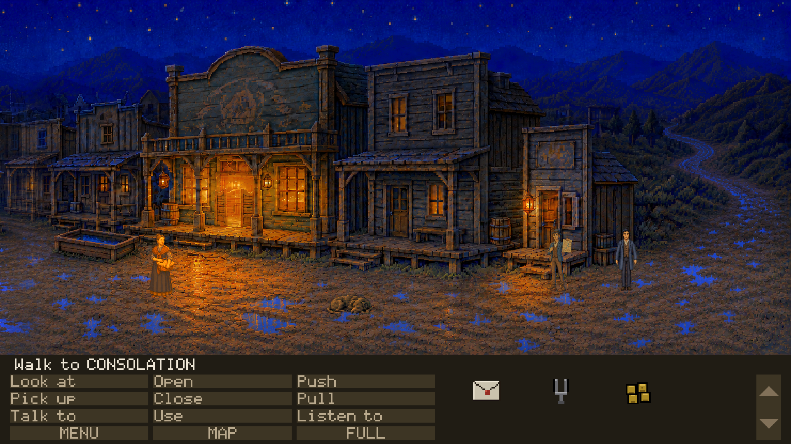
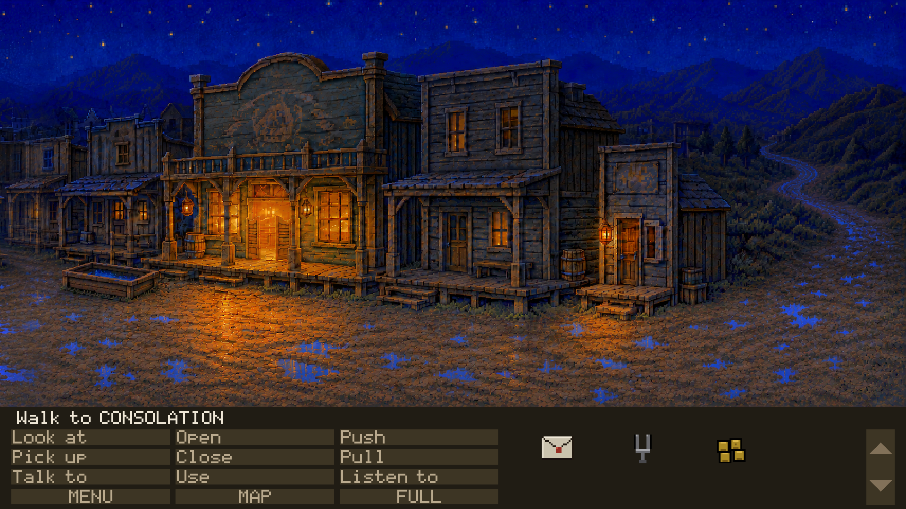
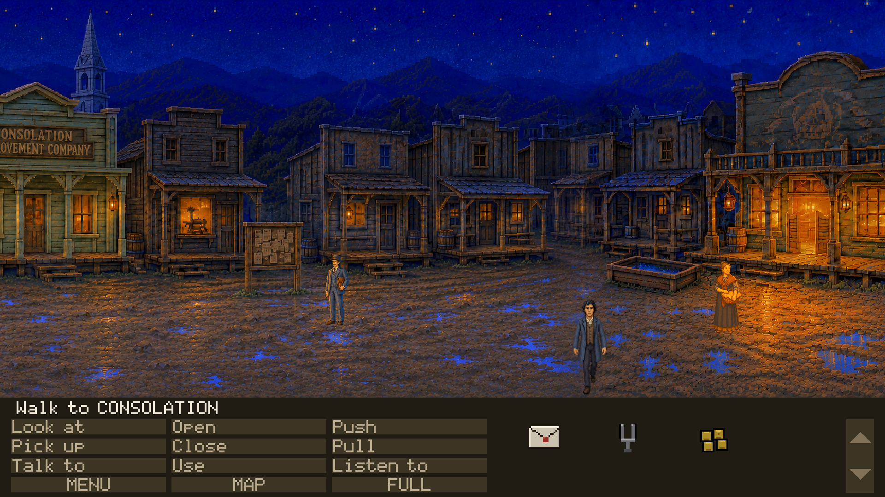

Every frame below is the full play area as the renderer drew it, in the running
game, at 622a8e7a on claude/last-claim-autonomy-audit-v3vsy6.
No crop, isolated sprite or source image appears here: those are for diagnosing what a full
frame has already shown.
These panels establish technical admissibility only. Nothing here says the
art is good, in style, funny or approved. Only Tyler sets visual_accepted.
FAIL — 10 failure(s):
gate 8D: boardwalk declares clipPlane 12 and this room's planes are 1, 2. Renderer.masked() looks a plane up by level and draws straight through when it finds none, so this room's masks load and occlude nobody.
gate 8D: boardwalk_1 declares clipPlane 12 and this room's planes are 1, 2. Renderer.masked() looks a plane up by level and draws straight through when it finds none, so this room's masks load and occlude nobody.
gate 8D: mud_far_0 declares clipPlane 12 and this room's planes are 1, 2. Renderer.masked() looks a plane up by level and draws straight through when it finds none, so this room's masks load and occlude nobody.
gate 8D: mud_far_1 declares clipPlane 12 and this room's planes are 1, 2. Renderer.masked() looks a plane up by level and draws straight through when it finds none, so this room's masks load and occlude nobody.
gate 8D: mud_far_2 declares clipPlane 12 and this room's planes are 1, 2. Renderer.masked() looks a plane up by level and draws straight through when it finds none, so this room's masks load and occlude nobody.
gate 8D: mud_mid declares clipPlane 12 and this room's planes are 1, 2. Renderer.masked() looks a plane up by level and draws straight through when it finds none, so this room's masks load and occlude nobody.
gate 8D: mud_near declares clipPlane 12 and this room's planes are 1, 2. Renderer.masked() looks a plane up by level and draws straight through when it finds none, so this room's masks load and occlude nobody.
panel D: the flag registry declares no ACT
panel D: ACT is undefined, wanted 3 -- the intended state was not reached and the frame is of the old one
panel D: after the principal change ran, not one flag, counter or inventory item differs from panel B. The change went nowhere, and this is panel B twice under another filename.

PANEL B — normal populated stateroom main_street · camera 1780 ·
flags T_OPENING_SAID T_COACH_DEPARTED T_UNDERTAKER_NAMED T_HOB_CROSSING T_THAD_LEAVING T_HOB_SPOKEN T_HOB_GONE T_OPENING_DONE T_SEEN_MAIN_STREET T_CASE_DOWN T_CASE_TAKEN ·
inventory letter tuning_fork four_dollarsthad @3300,706 150px sprite

PANEL A — base state, cast suppressedroom main_street · camera 1780 ·
flags T_OPENING_SAID T_COACH_DEPARTED T_UNDERTAKER_NAMED T_HOB_CROSSING T_THAD_LEAVING T_HOB_SPOKEN T_HOB_GONE T_OPENING_DONE T_SEEN_MAIN_STREET T_CASE_DOWN T_CASE_TAKEN ·
inventory letter tuning_fork four_dollarsthad @3300,706 150px sprite

PANEL D — principal changed state: Act III repaints the Improvement Company sign -- 'fresh gilt on the lettering' -- and posts the funeral notice on the board. Doc 35 section 2a's worked gate ruled both STATEFUL for exactly that reason, and they are the only two things on this street that change appearance rather than what Thad says about them.
AND IT IS NOT REACHABLE TODAY, WHICH IS WHY THIS IS DECLARED RATHER THAN OMITTED. Errata 60 rules ACT a numeric counter written at four places in doc 48's scripts; content/flags/flags.json declares 22 flags and ACT is not among them. So the gate the repaint compiles to cannot be satisfied by anything, and the proof fails panel D by name. An unreachable principal change is a finding; an undeclared one is a hole in this file.room main_street · camera 595 ·
flags T_OPENING_SAID T_COACH_DEPARTED T_UNDERTAKER_NAMED T_HOB_CROSSING T_THAD_LEAVING T_HOB_SPOKEN T_HOB_GONE T_OPENING_DONE T_SEEN_MAIN_STREET T_CASE_DOWN T_CASE_TAKEN ·
inventory letter tuning_fork four_dollarsthad @1875,857 206px sprite